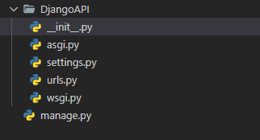

Django 建構
Django的架構
Django是一個由Python建構而成的網站框架(Web Framework)，其中能夠包含許多的應用程式(APP)，其架構就是將網站的各個功能，模組化為多個應用程式(APP)，而每一個應用程式(APP)，其實就是Python的套件(Package)，如下圖:
就像是如果要開發一個購物網站，可以把整個網站的功能切分為多個不同的應用程式(APP)，例如登入(Login)、販賣品項(item)、商品歸類(Classification)及搜尋商品(Search)等，每一個應用程式(APP)皆專注在特定的功能邏輯，這就是Django框架的基本架構
Django的優點
擴展性
由於Django的架構是將網站中關聯性高的功能模組化為多個套件(Package)，所以未來要擴展新功能時非常的容易，並且不會影響到既有的專案架構
移值性
jango框架定義了專案的基本架構及程式碼撰寫規範，開發人員在參與多個專案時，無需重新適應，可以快速的進入狀況，也因為遵循了Django的規範，提高了Django專案的維護性
強大的後台
在建立Django專案後，預設即提供了一個功能完整的後台，包含使用者的管理、群組管理及資料庫等，並且能夠依需求客製化，無須從頭開發，這也是Django能夠快速開發的原因之一
安裝Django:
步驟一
步驟二
在指定的資料夾內建立Django，我們在cmd裡輸入django-admin startproject [檔案名稱]
執行完後，可以看到django-admin套件管理工具在Django專案中建立了一個基本的網站架構，包含了專案主程式資料夾(potrip)及manage.py檔，如下圖：其中檔案功能說明如下:
- __init__.py: 用來告訴Python，potrip是一個套件(Package)
- asgi.py: 全名為Asynchronous Server Gateway Interface(非同步伺服器閘道介面)，是Django3.0新增加的檔案，用來提供非同步的功能
- settings.py: Django專案的設定檔
- urls.py: 定義Django專案中，各個應用程式(APP)的網址
- wsgi.py: 全名為Web Server Gateway Interface(網站伺服器閘道介面)，提供Django網站和伺服器間的標準介面
- manage.py: 用來管理整個Django專案，像是啟動本地端伺服器、連接資料庫及建立應用程式(APP)等
步驟三
在terminal輸入python mange.py runserver
最後，點選localhost:8000，如果看到以下的畫面，恭喜你成功安裝了Django網站框架